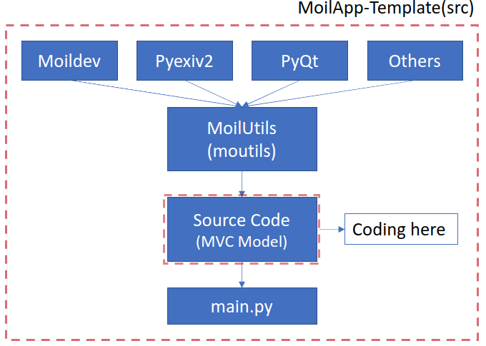
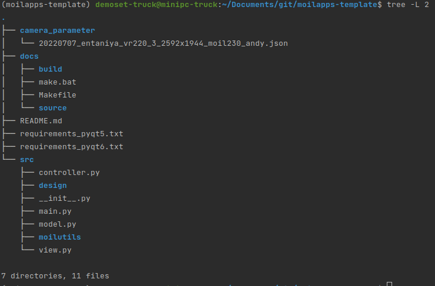

Definition and overview
Important!
API (Application Programming Interface) is a logical interface to a software component that hides the internal details needed to implement it.
API also allows two applications can talk to each other. Some advantages of using API are increasing productivity, high efficiency, ease to understand, and reduced development time. The main reason for making this API is distributed development and modularized application. The main design for this API is shown in the image below:
What is MoilApps-Template?
{kind=link}
From the picture above, in addition to speeding up development time and facilitating the apps development process, the API also allows it to be a bridge in connecting the apps created with MOIL-APP. Moil API is a collection of several modules that contain functions to simplify apps development. The moil API we are developing is called MoilUtils. This API was developed with the aim of developing user interface-based apps using PyQt and the python programming language.
Besides being used for making MoilApp apps plugins, this API can also be used to develop apps independently. The source code can download on the following “git clone https://github.com/MoilOrg/moilapps-template.git” After you download the source code of API, you can move the file to your working directory, don’t forget you have to install it and activate the virtual environment according to the requirements. the file structure will look like the image below:
{kind=link}
The Moil API currently has several main modules, namely Moilutils. MoilUtils is a module that contains basic functions to build an application, there are approximately 20 functions that you can use to make it easier for you to develop applications. The first thing you have to do is import this module, you can see the example below:
Dependencies
Important!
Each Every installation needs to pay attention to the python version used. Installation requirements support pyQt5 and pyQt6 from python 3.7 - 3.8 but use different opencv like pyQt5 opencv_python==4.2.0.32 while pyQt6 is the latest version of opencv-python. Some unit tests have a dependency on python-tz. This dependency is optional: the associated test will be skipped if it does not exist on the system.
PyQt5
PyQt5 is a third-party function library for Python. It is a function library used by Python to design user interface (GUI). If you want to design a more beautiful interface, or the code is easier to understand, PyQt5 is often used instead of built-in Python. The implementation of Tkinter, this tutorial will introduce how to install the PyQt5 library, as well as the basic introduction of PyQt5. Qt itself is a function library of C++, while PyQt is a branch of Qt. It mainly uses Python and Qt for interface design and development. In addition to using Python syntax, PyQt also retains the powerful functions of Qt. Most of them are developed using Python. The functions that come out can be matched with PyQt. PyQt5 is the version of PyQt. In addition to simply writing the interface through code, it can also use Qt Designer’s visual drawing graphics editing tool to design the interface, and then convert the interface into Python code and concatenate the program logic, which greatly reduces the interface design. threshold .
PyQt6
Upgrading from pyqt5 to pyqt6 is fairly straightforward, but there are some caveats. For some programs, just renaming import pyqt5 to pyqt 6 is enough to get the program running with the new version. But in most cases, you still need to consider changes in pyqt and qt itself.